Every take stays in: how five people built God Machine in five days
God Machine is a quick, dark, first-person time-loop shooter. You have 45 seconds to stop a missile launch. You die. The take resets, and your last run comes back as a ghost whose shots and lever holds still count.
We are Pirates: five people and a stack of AI agents, five days, and one rule. No agent submits work until a human has approved that exact changelist.
Below, day by day: what we built, what broke and how we fixed it, with quotes from the nine calls we recorded.
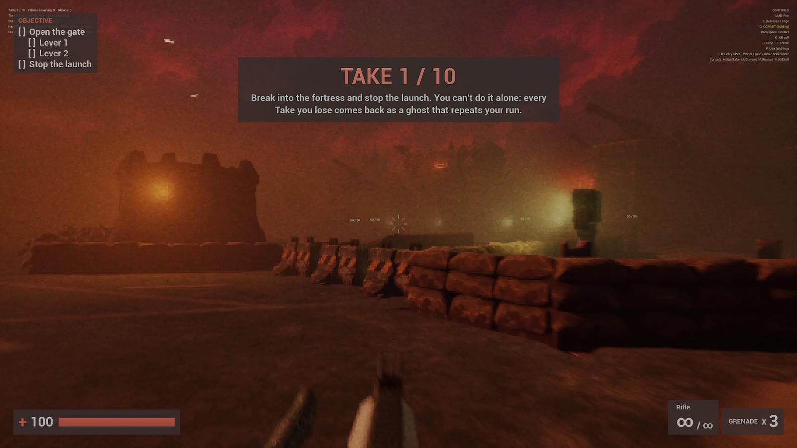
At a glance
- Who: Pirates. Margus, Nils, Surhay, Riho and Oliver.
- When: theme reveal Wed 11 Nov, release builds Sun 15 Nov. Unreal Engine 5.8.4, Perforce, Trello.
- Calls: nine, about 25 hours, all recorded and transcribed. Every quote below comes from them.
- Agents: Claude Code and Codex (code, docs, builds), ChatGPT, Gemini, Nano Banana, GPT Image and Adobe Firefly (images, sounds), Meshy and Tripo (3D), Blender MCP (rigging).
- The rule: agents work Trello cards; a human tests and approves one changelist; only then may the agent submit it. Margus logged it at 23:45 on night one.
- Trello: 187 cards. 48 AI-labelled cards finished: 37 in Done, 8 in AI Done / Handoff, more in Human Testing.
- Changelists: the first blockout map was CL 135 on Friday. By 19:38 on Sunday the counter passed 330, with 151 of 151 automated tests passing.
- Generated vs kept: 71 3D models in one day, 70 imported, most rejected on Saturday's review.
- Builds: RC1 461 MB, RC2 614 MB, RC3 849 MB. The jam limit is 1 GB.
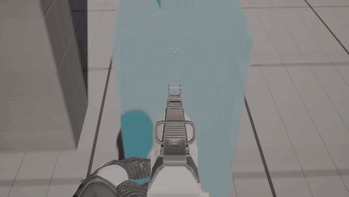
The changelog
Each day ends with what we cut. It is a director's cut, after all.
Day 1, Wed 11 Nov: the theme
Theme: Director's Cut. First call: 21:36. Nils alone brought eight pitches: a rave rhythm game, a robot arena, Human GPT (you play the AI answering prompt spam), a 911 dispatcher, a reverse battle royale, and God Machine: a city-sized war machine run by a co-op crew, one player piloting, another keeping the batteries alive.
Surhay: "I am hearing Margus's inner thoughts." Margus: "I'm hearing a very big game." Cut for scope. Remember the name.
Surhay pitched the most literal take, cutting film as a mechanic, and reviewed it himself: "Wow, dead silence. Okay, bad idea."
Decided: Unreal 5.8.4, not the 5.9 preview, because the preview is more likely to break. Everyone runs the ideas through their own AI, posts bullet points on Discord, and we vote. Margus: "whatever happens tomorrow evening, we lock down the idea for good."
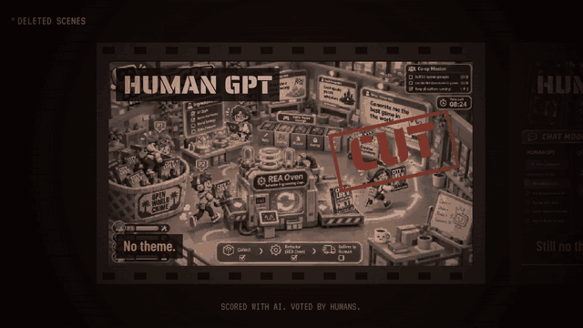
Cut today: rave.exe, the robot arena, Human GPT, a turn-based party of cats and, for now, God Machine.
Day 2, Thu 12 Nov: the idea locks
Margus and Nils turned up with the same idea. Margus: "I managed to reach a point where Nils said, oh, maybe that is a good idea. It just took me like eight hours."
You are a grunt with 45 seconds to stop an ICBM launch at an enemy fortress. You die, the take resets, and your last run replays as a ghost. Its bullets, grenades and button presses still count. Enemies ignore it. Margus: "The final cut is where a bunch of stuff is cut out, but this is the cut where every take is in."
The vote. The other finalist was an RPG built around AI-generated content. Surhay preferred it but would not oppose. Margus made the case: "what indie games are supposed to be doing these days is making something unique, taking chances."
The setup:
- Perforce for code and assets, Trello for tasks. Margus already had a Claude session connected to the board, writing the task cards.
- Jam perks: a free month of Meshy with 10,000 credits, 3,000 Tripo credits and a week of Tripo Pro. Nils taught Riho the 3D pipeline.
- Surhay played a metal riff for the soundtrack. Margus: "the metallic riff was insane."
- Oliver took the devlog. Surhay pitched a mock documentary: each of us interviewed in the field, shot mid-sentence, take resets, next person. Nils on the interviewer: "He's literally commissar." It stayed a pitch. This post is the cut that survived.
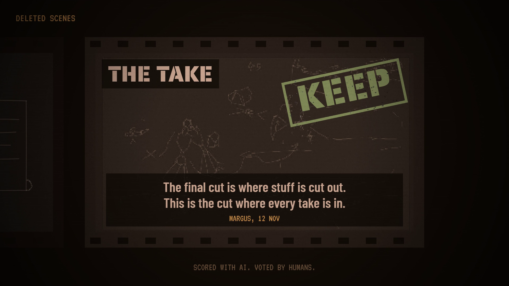
Cut today: the AI RPG.
Day 3, Fri 13 Nov: first playable
Built. Margus planned the architecture with Claude: one reset function that reloads the level, a fixed 60 Hz mission tick, and recordings that store commands, not outcomes. The moving shield landed in CL 159.
Broke: the wrong lever. With two levers, the ghost replayed its hold on the wrong one.
- Cause: every placed lever defaulted to the same tag, so two levers shared one identity.
- Fix: identity is the placed actor's name, saved in the map, so it survives every reload. Logged at 20:20.
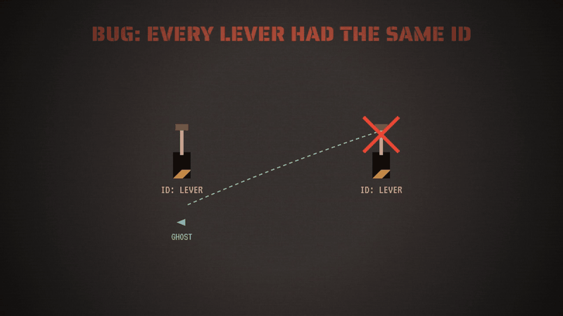
Art. It starts by hand. Nils sketches, image tools turn sketches into multi-view references, and Tripo builds and auto-rigs the model. For props Oliver used a grid trick: one image holds nine props in a 3x3 grid, a script cuts it into tiles, each tile goes into Meshy. On the night call: "I made 71 3D models for you boys to use."
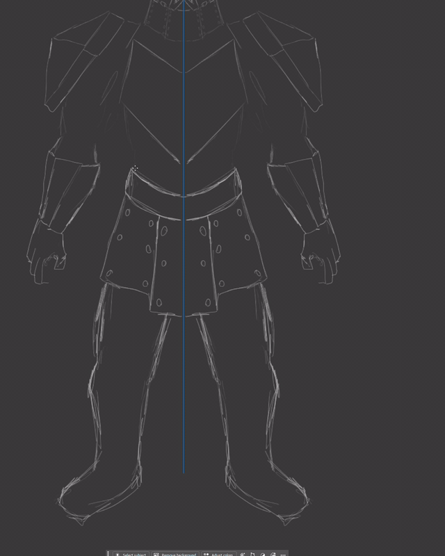
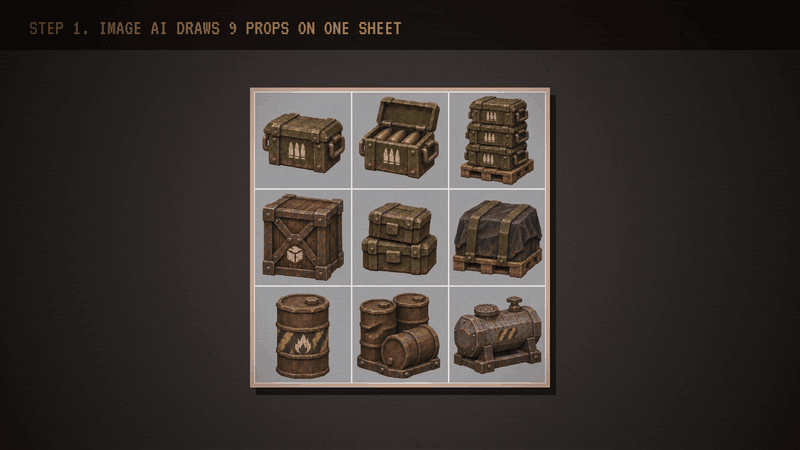
The night call ran to about 1 a.m. It ended on the first playable blockout. Margus: "So technically the game works now. But the only problem is there's no way I'm going to make it to the fortress in 45 seconds." Nils: "Oh, it's pretty far away, bro."
Good by Sunday? Margus: "No, it's going to suck and we're going to lose." Then: "Do or die."
Cut today: editor binaries in Perforce. Everyone compiles the C++ locally instead.
Day 4, Sat 14 Nov: the meshes fail review
Early in the first Saturday call an agent took a mesh from the template, "and it's already doing recoil as well." Margus: "We're like underestimating AI."
On the second call, from 16:58, Oliver loaded his models into the map for the first time.
- Nils: "What the hell is wrong with these meshes?"
- Oliver: "I didn't even notice it when I was looking."
- Oliver, closer: "this a little bit looks like hay stack, not sandbags."
Walls with holes, doors in random places. The broken meshes stay out of the level.
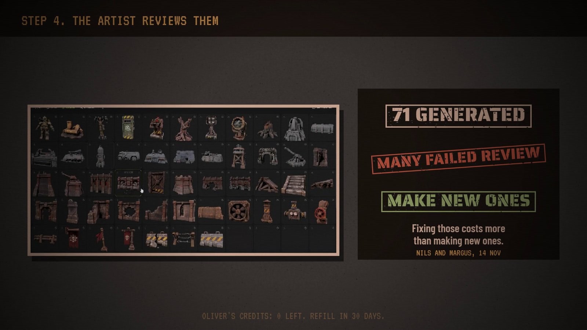
Broke: mesh weight.
- Cause: generators output huge meshes. A tank cut to 35,000 triangles still weighed 90 MB, because its source had 2 million.
- Fix: Unreal's built-in LOD reduction. Nils cut one mesh to 3% of the original; a handgun went down to 13,000 "and it looks exactly the same." A 1.2 million triangle model gets cut to 250,000.
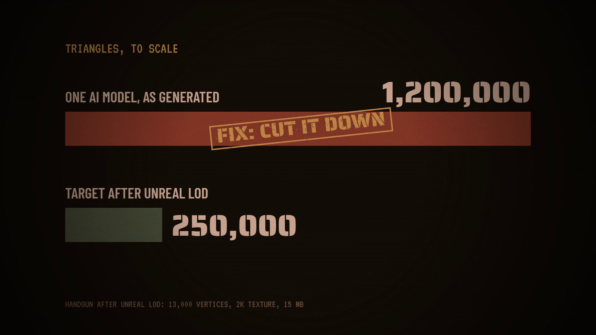
Also broke: Firefly's heavy-trooper footsteps sounded like a giant mech. Nils: "he's taking the heavy troop too literally." A scope render target would have dropped the game to about 5 fps, so scopes went. Nils suggested funny tank wrecks. Surhay: "No, no, no, no. We do no funny." Margus: "This game is serious."
Broke: ghost drift. Replaying recorded inputs runs through per-frame movement, so a ghost climbs the stairs a little differently each time. Recording exact positions instead lets it phase through a shut door. The debate did not settle that night.
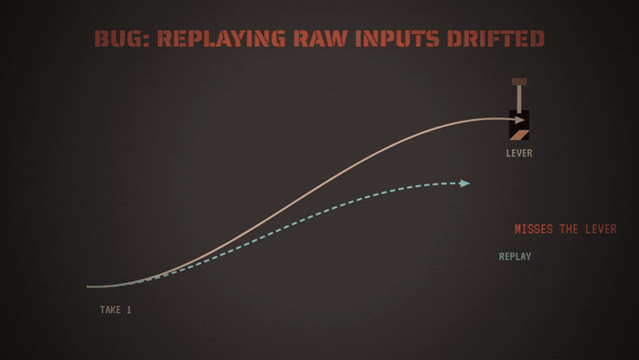
Night call, 22:38. Nils and Margus agreed that fixing the broken AI meshes costs more than making new ones. Nils: "everything that's rigged by Blender MCP is better." The one-piece landscape gave way to a hand-made desert, sand only, with tessellation. Margus turned on friendly fire, and a test tank went down: "Three grenades. That's all it took."
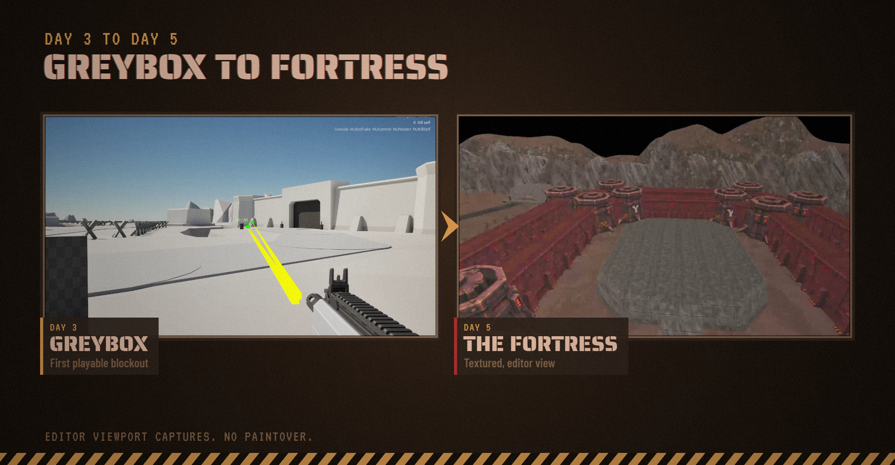
Cut today: scopes, the AI level meshes, the one-piece landscape, and anything funny.
Day 5, Sun 15 Nov: objectives, sound, ship it
Morning call, 11:36. Nils: "I think the overall goal is great, but I think we should make the current playable part good as well." Riho proposed the HUD goals; in the final build they read "Open the gate" (two levers) and "Stop the launch". He also redid the broken character rigs in Blender from scratch.
Oliver had his agent wire the weapon sounds, the ambience and a music track per take into gameplay (CL 251). Nils: "Oliver is doing sound. I'm doing the level. Margus accidentally also did the sound."
Broke: the mixer. Margus checked CL 251: "None of the 16 uses sound class." Fix: CL 252 routes them through the sound classes.
The ghost fix. A drifting ghost now snaps back onto its recorded transform, or its earlier take never touches the lever. Oliver asked for a ghost glow. Margus: "Nils likes regular character, so we're going with that right now."
The name. The walker's working name could not stay in the game. Nils had one ready: "God machine." Later Oliver asked whether the title would be God Machine: Director's Cut. Margus: "Cut machine." Oliver: "Just God Machine." Night one's deleted scene came back as the title.
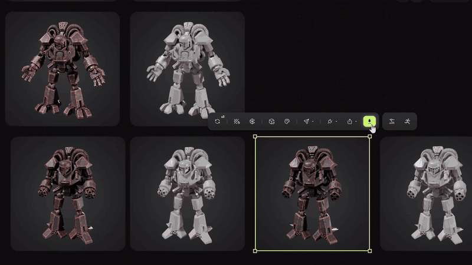
Release candidates. Claude Code ran the first builds on Oliver's PC. RC1 at 14:58: a 461 MB zip that reloaded after a timeout in 0.2 seconds and spawned its first ghost with zero errors. While the agent packaged RC2, using 25 of Oliver's 32 GB of RAM, Margus said: "We don't use our brains. We do, but AI tells us." RC2 landed just before 17:00 at 614 MB. Margus built RC3 at about 19:25: 849 MB.
Broke: the packaged build. Unreal cooks only the game map and what it references, so assets that C++ loads by path were left out. RC1 and the first RC2 shipped without arm IK, HUD and pause menu. Fix: those folders are always cooked now, and RC2 was rebuilt with them. The game opens paused in the pause menu instead of a main menu (CL 298).
Broke: ghosts that cannot jump. In a Shipping playtest Margus jumped a barrier and his ghost could not, so the take desynced. Cause: the recorder sampled the jump flag on the 60 Hz mission tick, but the engine clears it one frame after take-off. Fix: CL 322, in RC3, verified in play by Margus.
Last hours: the walker now walks its 80 m path. Tracers, volumetric fog, pixelation, film grain, ballistic impacts. The final build went out on Sunday night, under the 1 GB limit.
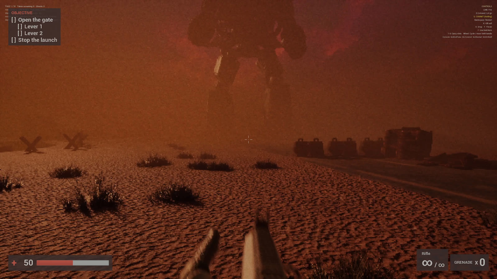
RC3 to RC4. The RC3 playtest list the team fixed for the final build:
- Music a bit too loud.
- Resolution changes applied only in fullscreen.
- You could walk through the walker.
- You could walk through the bunker, pipes and rubble at spawn, the bunker and tank wreck by the fortress, and the lights by the fortress entry.
- Enemies faced the wrong way unless they were shooting.
Cut today: the glowing ghost, the main menu, the missile launch at timeout, and the footstep loops Surhay threw out: "These are sound loops."
How the agents worked
Every agent read the same AGENTS.md first, plus five project skills: asset import, Perforce work, review handoff, Trello task and Unreal change.
- One card, one human, one runner. Each agent task is a Trello card with the AI label and one accountable human. It moves AI To Do, AI Doing, AI Done / Handoff, Human Testing, Done, or Blocked.
- Check out before you write. Binary assets are locked to one person. If someone else holds a file, the agent stops and blocks its card.
- Hand off with evidence: the pending changelist, every file touched, the tests run, what a human should test.
- Approval is per changelist. Any edit after approval cancels it.
- Decisions live in a log, not in chat. Sixteen numbered entries by Sunday, several written by Margus in planning sessions with Claude.
- The docs are agent work too. Codex rewrote the workflow docs and skills (CL 161). Claude Code imported Oliver's 70 Meshy models without opening the editor (CL 202).
It worked. On Friday Surhay's agent needed the player character for the arm IK, found Margus had it checked out, and moved its own card to Blocked. Surhay: "this setup worked well with Trello. I'm liking this."
It also broke. On Saturday Margus sat waiting while Surhay's agent built editor binaries: "I am blocked by our machines." Long-running agent changelists held shared files for hours, so Margus overruled the rule for text files and made the agent holding them do the merging. On one PC a submit pulled in about 327 generated files (CL 195, cleaned up in CL 200). Two agents produced the same sound task list. And one vague brief ran for two hours. Margus: "how did you even manage to make a task that took two hours to do?" Surhay: "I gave it more of a vague thing." His lesson by Sunday: "more specific instructions rather than saying like yo, figure it out yourself."
What the agents finished: 48 AI-labelled cards, among them the core loop, Hybrid ghost correction, grenades and rockets, enemy view cones, objectives, HUD, pause menu, the sound system and the packaged builds. Each passed a human first.
How the take system works
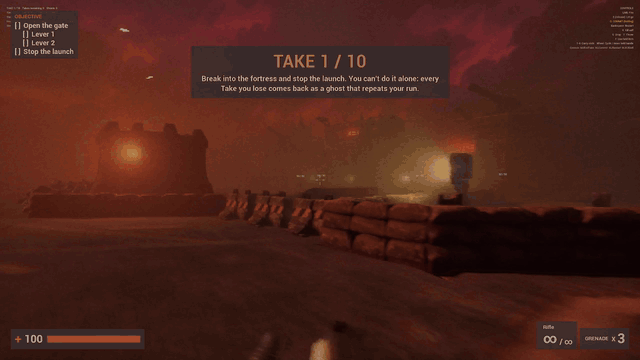
- A take is 45 seconds on a fixed 60 Hz mission tick: 2,700 ticks. The final build gives you 10 takes.
- We record transform samples, every input, and actions (fire, hold, commit) stamped by tick and sequence number, never by float seconds.
- On death, timeout or commit, the level reloads. Every finished recording spawns a ghost: the same character class as you, no glow.
- Ghosts replay commands, not outcomes. A ghost's shot is fired again into the current world, so this time it can hit or miss.
- Default replay is Hybrid (CL 285): recorded inputs drive real movement, a gentle nudge (strength 0.25) pulls the ghost toward its recorded path every tick, and a full snap happens right before it fires or interacts. More than 50 cm off its path, it desyncs.
- Interactions are first come, first served for players and ghosts alike. Commit while holding a lever and your ghost holds it to the end.
- Enemies ignore ghosts by default. Ghost sounds get an echo, so you can hear your past self.
One prompt
Most devlogs show the result. Here is the input. Nils, building the level, attached an image of a bunker and typed this, word for word:
"back to images: next bunker infantry door we need a concept, make it more detailed in our style, spikes, iron rivets, yellow hazard lines, Front, sides, back no background separate images. (continue with the grimdark ps1 style we've polished)"
What came back after 3 minutes 11 seconds: a riveted concrete bunker with three spikes, hazard stripes, two red lamps, an armoured door and our Y emblem, as four images. It leans on "the grimdark ps1 style we've polished", a whole chat of earlier images. The context did the work, not the sentence.
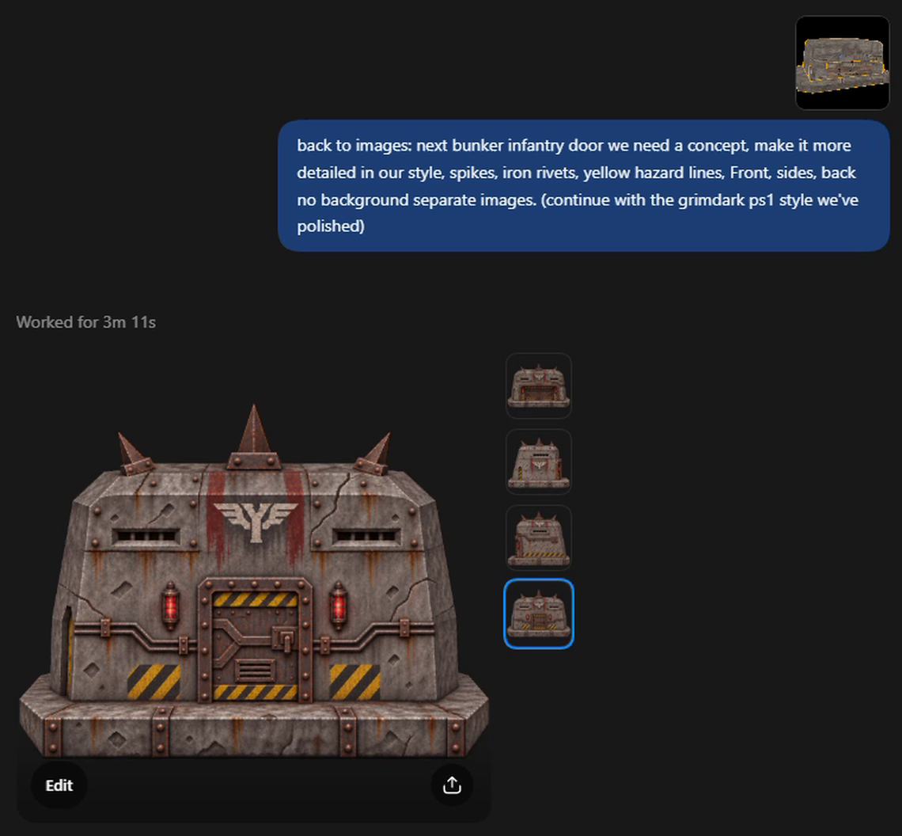
For contrast, Oliver's prop sheets used long prompts that Claude wrote from his brief, with strict render rules: "Solid closed shapes in one piece, no thin wires, chains, cables, antennas or floating parts." The sandbag cell read: "Sandbag wall: a curved segment of sandbags, three bags high." What came back looked like a haystack.
What we think about AI
We do not agree, and we kept it that way.
Nils is the critic. "I wouldn't use these meshes in the final game because these all look like AI made." On one cannon he listed the tells: lumpy surfaces, lines that are not straight, "four barrels that go into one single barrel." Oliver conceded the legs but defended the lumps as rustic. Surhay: "It looks like hand forged."
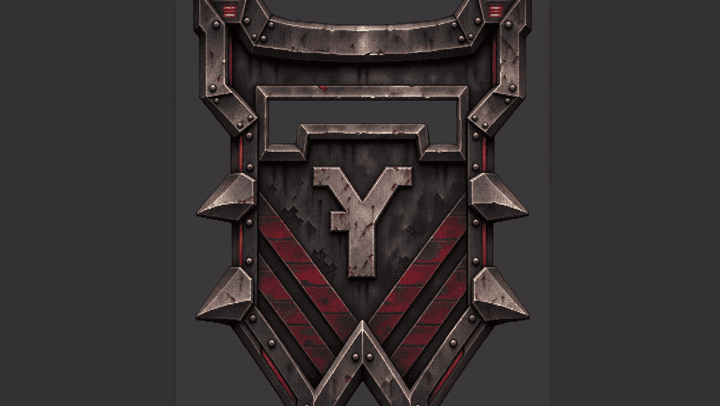
Surhay hates it and uses it. On Friday Oliver said generative AI was moving at "this [bleep] pace. Unreal." Surhay: "[bleep] that. I hate it so much." On Sunday: "it's actually showing us how fast we can ship games."
Oliver had no game-dev background. On Thursday he said AI was strong enough that you don't need technical knowledge, "as long as we have a strong architectural plan." Nils answered that an Unreal game is not a web game: you build isolated pieces and finish them one at a time. Both were right. Oliver's verdict on Sunday: "you need that human touch just to get the feel of the game."
What is not true yet
At submission, honestly:
- Ghosts still drift. The snap-back keeps them on their levers, but a ghost can still get stuck.
- One character model got the full skinning pass first. Others can clip into the camera.
- There is no main menu. The game starts in the level, paused.
- The walker walks, but it is a set piece, not an enemy.
- No ICBM launch when time runs out. It is still in the backlog.
- The lever, console and gate are still greybox models.
- On Sunday morning Nils said the playable part was not good enough yet. By evening it had objectives, a win at the console, a pause menu and fog. You judge.
Tools and licences
- Engine and code: Unreal Engine 5.8.4, Visual Studio, Perforce, Trello, Claude Code, Codex, ChatGPT.
- Art and 3D: Nano Banana, GPT Image, Adobe Firefly, Meshy, Tripo, Blender with Blender MCP, Photoshop, hand sketches.
- Third-party content: Fighting Game Loops and Sound Effects (Fab, ESM Team), Ballistics FX (Fab, Cubit), Modular Post Apocalyptic Desert Environment (Fab, JustB Studios), Lyra Starter Game animations (Epic Games), Free Weapon Sound Effects (Fab, SoundLab1), Essential Footsteps SFX (Fab, Sound Kajiya), Procedural Heartbeat (Fab, Timofei Shukshin), GenericNPCAnimPack and GrenadePack.
- Music: a different war-themed loop per take, from the ESM pack above.
- Calls: Google Meet with Gemini transcription, the source of every quote above.
Credits
- Margus: core loop, take and ghost systems, architecture, Perforce and Trello workflow
- Nils: concept, level design, hand sketches, the walker, textures, the team's AI critic
- Surhay Bas: movement, first-person arms, shield, sound
- Riho: weapons, characters and vehicles, rigging
- Oliver: devlog, asset generation, sound integration, release packaging
On the Thursday call Surhay said it had been a while since any of us released a game. Nils: "We'll at least release something."
We did. Every take is in.